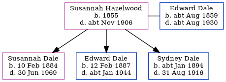

Susannah Dale (née Hazelwood) 1855 - c1906
[ Home ] | [ Calendar ] | [ Surnames Index ] | [ Errors ] | [ Family History ]Susannah Hazelwood, the wife of Edward William Dale (the first cousin three-times-removed on the father's side of Nigel Horne), was born in Thetford, Norfolk, England in 18551 and married Edward (a labourer ag with whom she had 3 children: Susannah Elizabeth, Edward William Alfred and Sydney) at St Mary's Church, Chilham, Kent, England on 11 Nov 18823.
During her life, she was living at Prospect Row, Harbledown, Kent on 5 Apr 18911; and at Shalmsford Street, Chartham, Kent on 31 Mar 19014.
She died c. Nov 1906 in Bridge, Kent, England2.
Children
- Susannah Elizabeth was born on 10 Feb 1884
- Edward William Alfred was born on 12 Feb 1887
- Sydney was born c. Jan 1894
Citations
- 1891 England, Wales & Scotland Census - Findmypast (was age 36 and the wife of the head of the household)
- England & Wales deaths 1837-2007 - Findmypast
- England & Wales Marriages 1837-2005 - Findmypast
- 1901 England, Wales & Scotland Census - Findmypast (was age 46 and the wife of the head of the household)
Media
Kent, Canterbury Archdeaconry marriages - GBPRS/CANT/MAR/006261/2
Family Tree
Map
Generated by ged2site. Last updated on Jul 3, 2024
Known Issues
No records of living with anyone